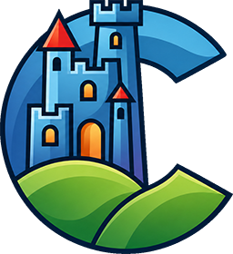
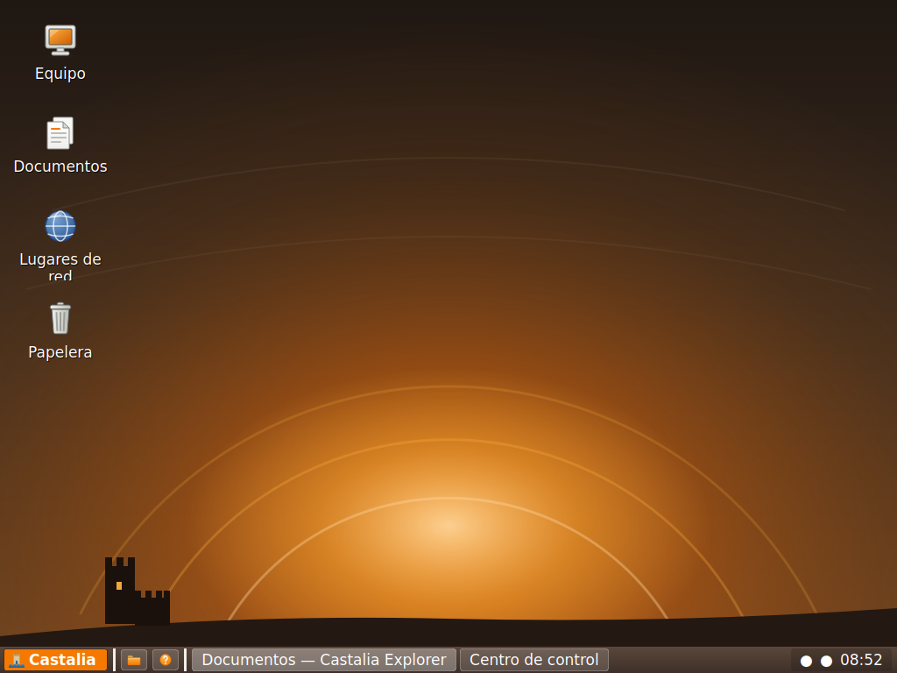
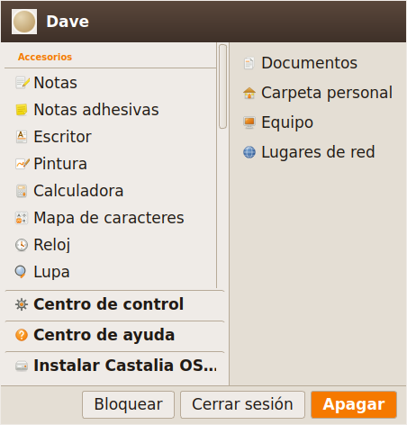
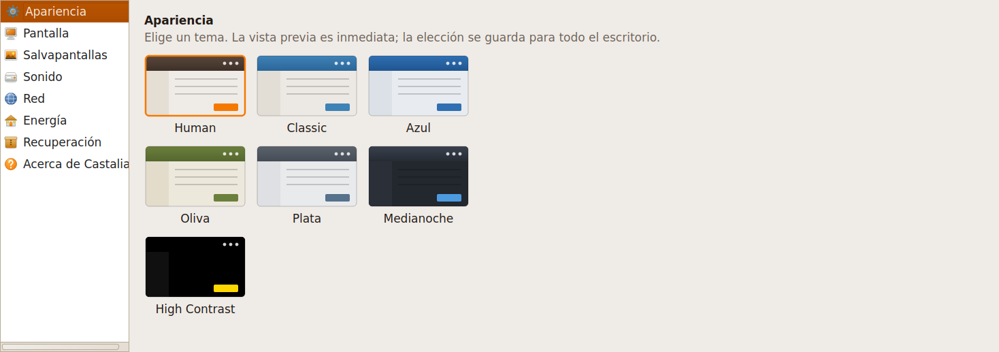
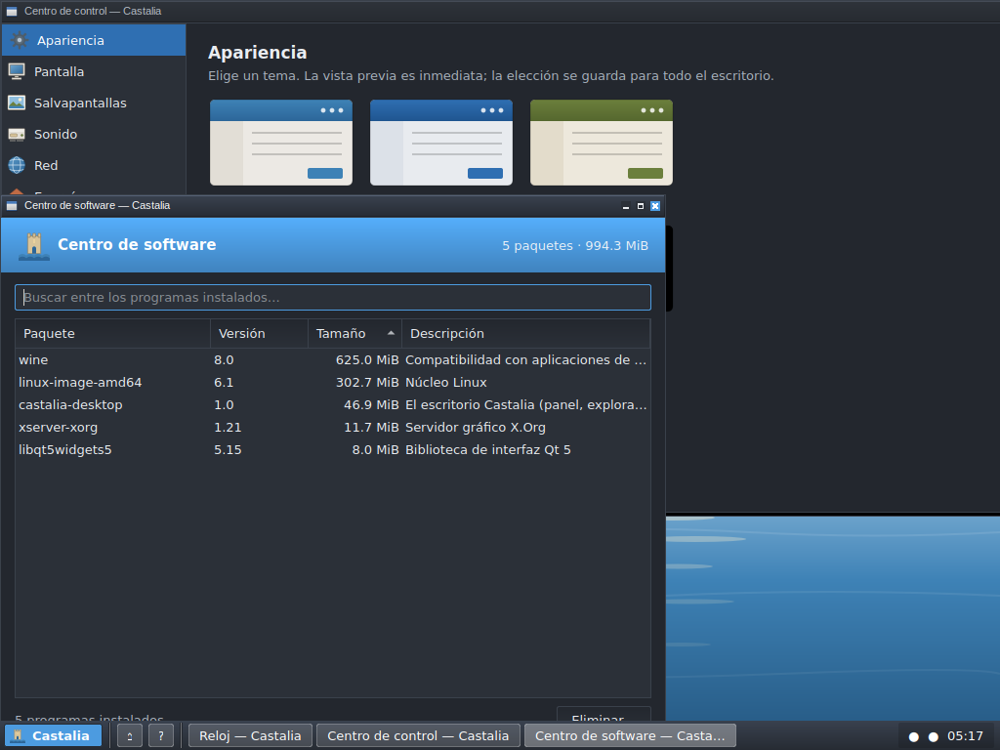
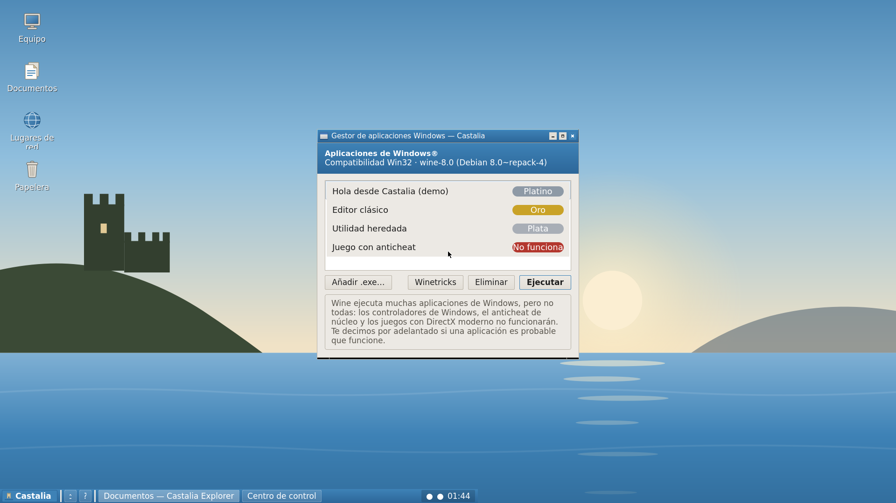
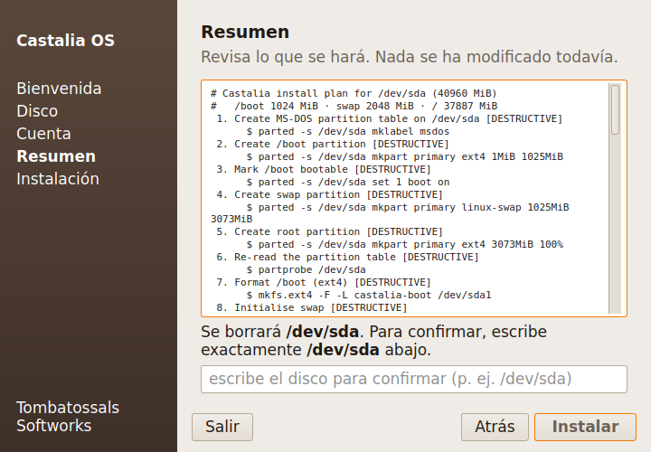
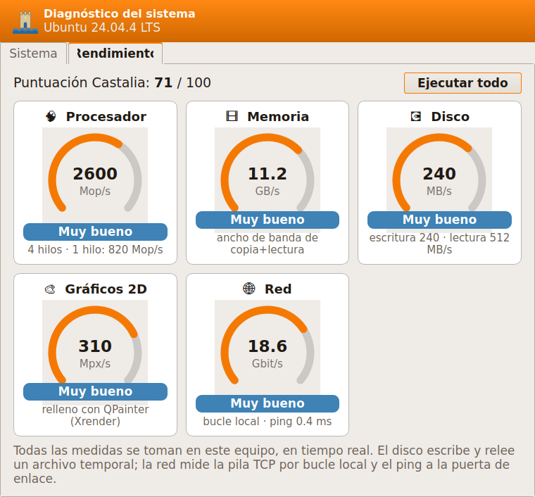
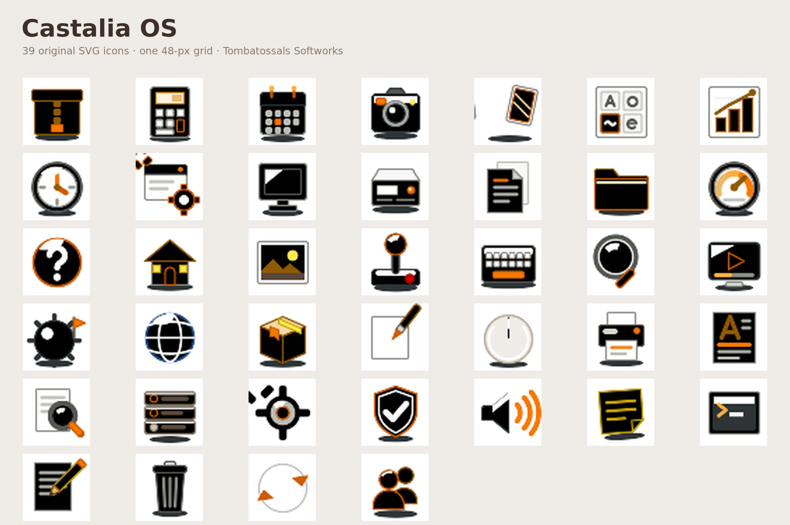

An original, XP-class desktop operating system that makes early- and late-2000s PCs feel fast, modern and cared-for again — with zero Microsoft code or artwork inside.
Everything here is free to quote. Nothing is under embargo.
Castalia OS is not a theme pack and not a Windows clone. It's a curated Linux distribution with its own Qt/C++ desktop shell, 46 first-party applications, a seven-theme design system and a managed Windows/DOS/ScummVM compatibility layer — every pixel of it original, built from scratch for the millions of Pentium 4- to Core 2-era PCs that modern software abandoned. It boots, runs and recovers happily in 512 MB of RAM.
46 native apps7 themes 40 original icons9 original pointersQt 5.15 · C++17 Debian, de-systemd'damd64 + i386 MIT sourceno Microsoft code
Real captures from the software — offscreen renders and live
QEMU/X sessions, not mock-ups. There's also a ~63-second demo screencast in
video/. Full captions in screenshots/CAPTIONS.md.








A single theme file drives the widgets, window frames, icons, greeter and sounds together — and CI won't let a theme ship if its contrast or its gradients are wrong.
Original Qt shell: desktop plane, EWMH taskbar, categorised Start Menu, Control Center, file manager. Event-driven, not polling. Short, optional animations.
Editor, rich text, paint, calc, image viewer, terminal (own VT100), sticky notes, clock, magnifier, two games, monitor, diagnostics, hardware center, disk manager, migration assistant, and the system trio.
Restore Points, an independent recovery environment, an update centre that snapshots first, and an installer that won't erase until you confirm.
Native-first; then a managed Wine layer runs old Windows programs in per-app sandboxes. DOS & ScummVM on the way.
No Microsoft code, branding, icons, sounds or wallpapers. Every asset original or libre, tracked in a ledger CI enforces.
512 MB RAM floor for the whole desktop. No compositor required. amd64 and i386 (SSE2).
theme.conf → Qt QSS + Openbox theme + icons + greeter + sounds, with a CI linter enforcing WCAG contrast and 16-bit-safe gradients.Full detail in technical.md.
Logos, screenshots, wallpapers and the full press text are in this folder. Need another format or a fresh capture? Just ask.
We're a small independent studio, and coverage is how projects like this reach the people who need them. We'll get you a build, a live demo or any imagery you need.